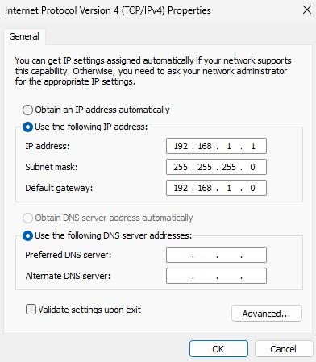

Getting Started with PYNQ Bootcamp
This guide provides instructions for downloading an already setup image or using a pre-flashed 32GB SD card. If you do not have a flashed SD card and prefer to set it up independently, navigate to this page: Board Setup & Bootcamp Image Creation. This guide also includes steps for setting up a static IP on your computer and accessing the Notebooks.
- What you need
- PYNQ Bootcamp 2024 Image
- Setup Network - Ethernet with Static IP to Configure Wi-Fi Credentials
- Power on KRIA-SOM
- Find Your Board's IP Address with OLED Screen
- Accessing the Jupyter Notebooks
What you need
- PYNQ Bootcamp image
- PMOD Grove adaptor
- Grove OLED V1.1 display
- Ethernet Cable
- Wi-Fi dongle
PYNQ Bootcamp 2024 Image
Getting the PYNQ Bootcamp 2024 Image
Download PYNQ Bootcamp 2024 image from: Pynq Bootcamp Image
Flash the image to a 32 GB SD Card
- Download Balena Etcher from https://etcher.balena.io/
- Download the latest bootcamp image from above.
- Insert the SD card into your computer.
- Run BalenaEtcher as Administrator.
- Flash the image to your SD card using Balena Etcher. (This may take a second try if the flash fails the first time.)
Setup Network - Ethernet with Static IP to Configure Wi-Fi Credentials
Note: This setup only needs to be done once unless you are trying to setup credentials again on a separate network. If you have already completed this step, skip to Power on KRIA-SOM
- Configure the static I.P. on the computer:
- Open the "Network Connections" in the settings.
- Right click on the "Ethernet Adaptor" and open the TCP/IPv4 from the properties.
- Add these settings in the TCP/IPv4:
- IP Address: 192.168.1.1
- Subnet Mask: 255.255.255.0
- Default Gateway: 192.168.1.0
 - Open the browser on the computer open the I.P. address 192.168.1.2:9090 that will open the jupyter notebooks your computer.
- Use "wifi-setup.ipynb" Jupyter notebook to setup your Wi-Fi credentials.
- Power off the board.
- Remove Ethernet Cable.

Power on KRIA-SOM


Find Your Board's IP Address with OLED Screen
- Unplug your board from power
- Connect your laptop to the Wifi network assigned to you
- In step 3 of powering on your board, you installed the PMOD adapter. PLUG in the OLED screen from your kit into pin G4 on the PMOD adapter
- Plug power back into your board
- Wait for a few minutes for the board to power up
- You should now see text displayed on the OLED screen that shows what network you are connected to as well as your board's IP address
- Connect your laptop to the Wifi network assigned to you and your board
- Open a web browser of your choice
- In the search bar type in the IP address of your board followed by ":9090". It will look something like this "192.168.1.5:9090"
- You are now ready to start writing code!
- This is what you will see after logging in. These are all of the notebooks and trainings that will be used throught the bootcamp.
To see an overview, click Trainings

Note: If you wait for more than 4 minutes and you still do not see the text displayed on the OLED screen, reboot your board by unplugging it and plugging it back in.
Note: Your IP address will change if you connect to different networks.
Accessing the Jupyter Notebooks
Once you have the IP address of your board, we can finally connect to it through your laptop! For this to work your board and laptop must be on the same Wifi network
<ip-address>:9090
Note: If you are no longer able to connect to your notebooks, repeat the steps to find your IP address as it may have changed.
More Information for Getting Started
AMD's KRIA Getting Started Page
Frequently Asked Questions
Frequently Asked Questions